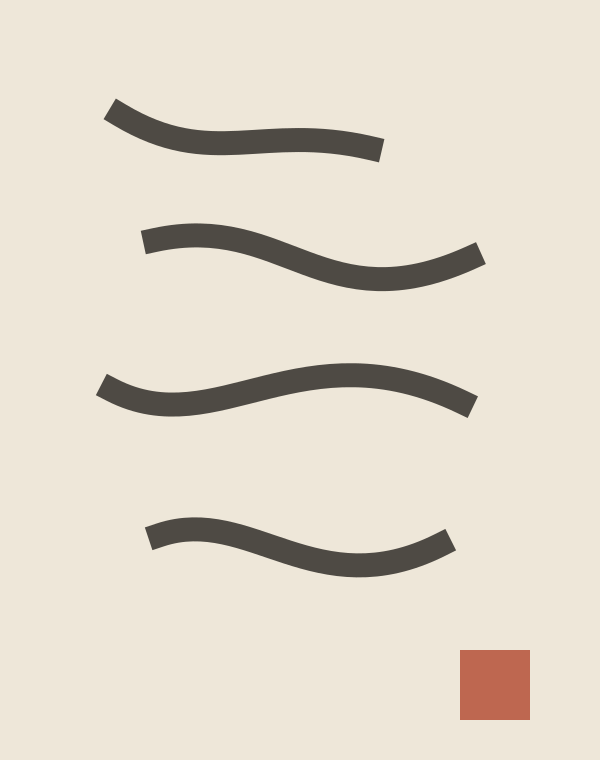
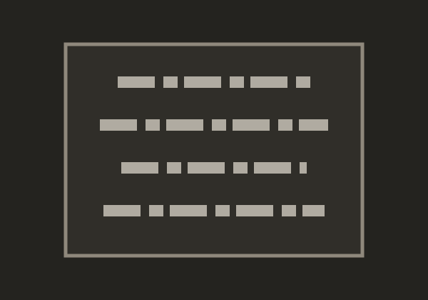

当代、文雅、克制的金石阅读界面
浅暖纸张、灰黑深色纸张与印泥橙红共同构成长期阅读和大量图像浏览的基础。 本页全部内容为虚构设计样例。
主题与语义色
浅色纸张
墨黑正文、低对比度边框与轻微纤维。
印泥强调深色纸张
灰黑表面、柔和暖白正文与适配印泥。
印泥强调
background-page
background-surface
background-elevated
background-muted
seal-red
border-default
success
error
字体层级与固定字标
山河入刻，纸墨留真
页面标题 Page title
章节标题 Section
正文使用系统字体栈。中文、英文和 2026 数字保持清晰协调的基线。
首页
碑刻
书帖
图标系统
基础控件
金石
重点
新释
发现 / 附近与书帖分类
首页信息流

纸上墨痕札记
碑刻列表
-

云峰山题名崖壁题名 · 释文待校 -
石门东侧残刻摩崖刻石 · 三行残文
书帖卡片
秋山札
松窗刻帖
反馈、浮层与加载
悬停或聚焦一条克制的提示
暂无内容
调整分类后再试。
加载失败
请稍后重试。